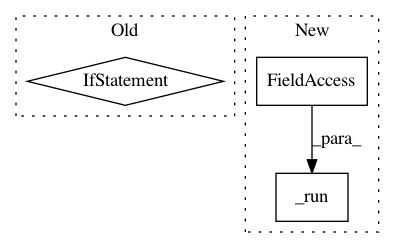

f54cd1b1b608772c04567bf049bc00c8e55186e1,bokeh/util/compiler.py,,_run_nodejs,#Any#Any#,126
Before Change
_nodejs = _detect_nodejs()
def _run_nodejs(script, input):
if _nodejs is None:
raise RuntimeError("node.js is needed to allow compilation of custom models " +
"("conda install -c bokeh nodejs" or follow https://nodejs.org/en/download/)")
proc = Popen([_nodejs, script], stdout=PIPE, stderr=PIPE, stdin=PIPE)
(stdout, errout) = proc.communicate(input=json.dumps(input).encode())
if proc.returncode != 0:
After Change
return stdout.decode()
def _run_nodejs(argv, input=None):
return _run(_nodejs, argv, input)
def _run_npmjs(argv, input=None):
return _run(_npmjs, argv, input)
In pattern: SUPERPATTERN
Frequency: 3
Non-data size: 3
Instances
Project Name: bokeh/bokeh
Commit Name: f54cd1b1b608772c04567bf049bc00c8e55186e1
Time: 2017-01-03
Author: mattpap@gmail.com
File Name: bokeh/util/compiler.py
Class Name:
Method Name: _run_nodejs
Project Name: streamlit/streamlit
Commit Name: 6dc2de29bacc30265e4cf54497f4caea7a484730
Time: 2019-02-20
Author: tconkling@gmail.com
File Name: lib/streamlit/proxy/BrowserWebSocket.py
Class Name: BrowserWebSocket
Method Name: _handle_backend_msg
Project Name: streamlit/streamlit
Commit Name: 5741bee8c7d87ca651d7e0d9dc157dd617d1eb93
Time: 2019-02-20
Author: tconkling@gmail.com
File Name: lib/streamlit/proxy/BrowserWebSocket.py
Class Name: BrowserWebSocket
Method Name: _handle_backend_msg